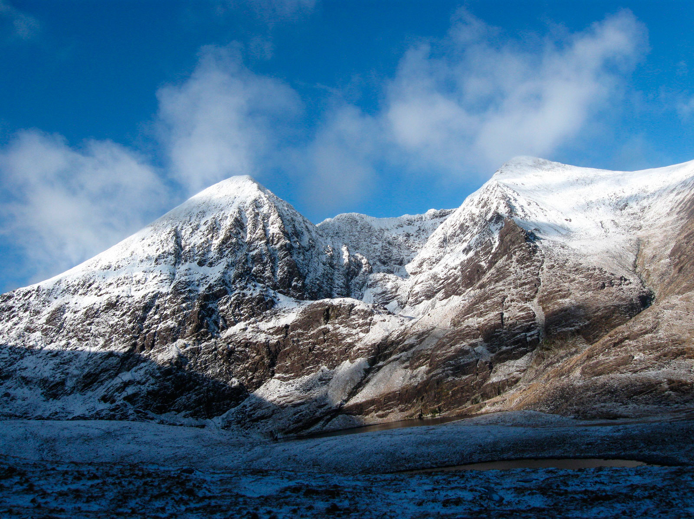

EXCURSION DATES
| Event Dates | Events | |
|---|---|---|
WED 1 FEBRUARY
Killarney Provincal Park, Kerry |
Extreme Ironing Spring Festival | |
SAT 11 FEBRUARY
Owenahincha Beach, Cork |
Extreme Underwater Ironing Beach Party | |
TUE 28 FEBRUARY
The Elysian, Cork
|
7th Annual Extreme Ironing Skyscraper Abseil | |
THUR 16 MARCH
Carrauntoohil, Kerry |
Extreme Ironing Summit Climb | |
WED 29 MARCH
The River Liffey, Dublin
|
Extreme Kayok Ironing Race | |
TUE 11 APRIL
O' Connell Street, Dublin
|
Dublin's Extreme Ironing Celebration Parade | |
FRI 28 APRIL
Lough Neagh, Northern Ireland |
Extreme Lake Monster Hunt Ironing Day | |
WED 3 MAY
Patrick Street, Cork
| Extreme Ironing Charity Run Special |
Featured Events
7th Annual Extreme Ironing Skyscraper Abseil
For many years now Cork City has grown acustom to the annual Extreme Ironing Skyscraper Abseil, cementing intself into Cork tradiontions itself. This EI event is the only chance to see celebrites abseil down a skyscraper whilst ironing a shirt at the same time.
TUE 28 FEBRUARY
The Elysian, Cork
Extreme Ironing Summit Climb
The Extreme Ironing Summit Climb is a daring adventure that will test even the most seasoned ironers. This is the most daunting extreme ironing challenge this year. This task is not for everyone and only some will have what it takes to iron a shirt on a mountain summit.

THUR 16 MARCH
Carrauntoohil, Kerry
Extreme Kayok Ironing Race
Have you ever seen a people kayoking down the River Liffey or seen someone Iron a lovely shirt? Well now is you chance to see both happen at the same time! This EI event is located all along the River Liffey in the Dublin City area.
WED 29 MARCH
The River Liffey, Dublin
Extreme Lake Monster Hunt Ironing Day
Some people dont believe in mythical monsters and some people even dont believe in Extreme Ironing. Well this friday you have the chance to show your friends that both infact do exist at Lough Neagh this April.
FRI 28 APRIL
Lough Neagh, Northern Ireland
Extreme Ironing Charity Run Special
Extreme Ironing isn't just about conquering mountains with an ironing board in your hand or trying to jungle a kayok ore in one hand and an ironing board, an iron, and a shirt in the other. Once a year the Extreme Ironing communutiy likes to come together and use its popularity for good. This year we are conducting a charity run along Cork City, where by people can run in a short marathon with an Ironing Board under their arm and raise money for multiple charities. This year Cork City is the location for the event.

WED 3 MAY
Patrick Street, Cork